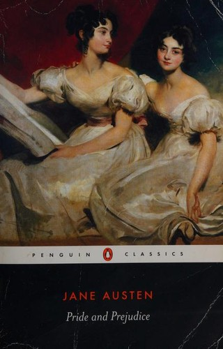

Bs 120
Dune
Una historia épica sobre poder, destino y supervivencia en un planeta desértico donde la especia determina el futuro del universo.
Una historia épica sobre poder, destino y supervivencia en un planeta desértico donde la especia determina el futuro del universo.
Una reflexión profunda sobre la sociedad contemporánea, la inseguridad y la velocidad que transforman la identidad individual.
Un ensayo que analiza la crisis del deseo, la intimidad y el sentido del amor en la modernidad.

Una historia de amor, orgullo y prejuicios que revela la complejidad de las relaciones humanas y la sociedad inglesa.
Un libro que cuestiona la obsesión por acumular objetos y propone una vida más consciente, simple y auténtica.
Es su obra más famosa y una puerta de entrada clásica. Aquí Žižek combina marxismo, psicoanálisis lacaniano y crítica cultural para explicar cómo la ideología funciona no como “falsa conciencia”, sino como una fantasía inconsciente que estructura nuestra realidad.
Un libro breve y potente donde distingue entre violencia “subjetiva” y violencia “objetiva” o sistémica. Es útil para entender su crítica política contemporánea de Slavoj Žižek.
Es su novela más famosa y una puerta de entrada perfecta a su pensamiento. Narra la historia de Meursault, un hombre indiferente emocionalmente que comete un crimen impulsivo en Argelia y enfrenta las consecuencias en un juicio donde lo condenan tanto por sus actos como por no llorar la muerte de su madre.